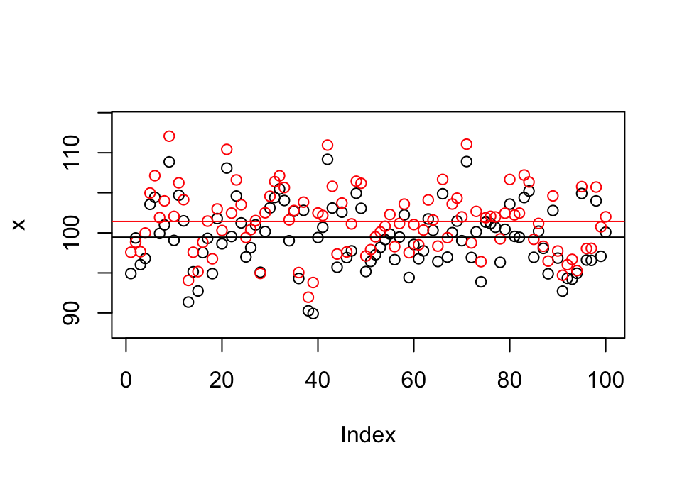
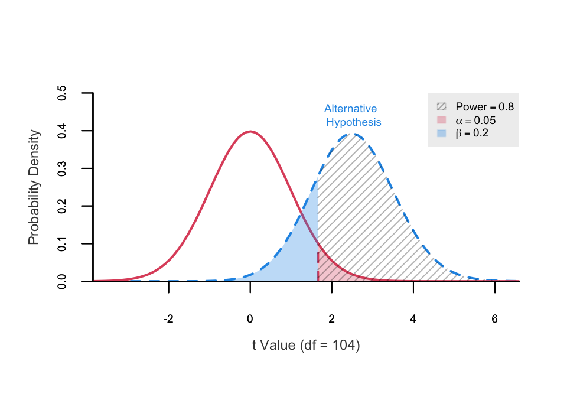

第 5 章 AB-test
## [1] 112.1## [1] 89.92Code

##
## Welch Two Sample t-test
##
## data: x and y
## t = -3.4, df = 198, p-value = 7e-04
## alternative hypothesis: true difference in means is not equal to 0
## 95 percent confidence interval:
## -3.0941 -0.8396
## sample estimates:
## mean of x mean of y
## 99.46 101.42##
## Paired t-test
##
## data: x and y
## t = -23, df = 99, p-value <2e-16
## alternative hypothesis: true mean difference is not equal to 0
## 95 percent confidence interval:
## -2.138 -1.796
## sample estimates:
## mean difference
## -1.967##
## Welch Two Sample t-test
##
## data: y and x
## t = 3.4, df = 198, p-value = 7e-04
## alternative hypothesis: true difference in means is not equal to 0
## 95 percent confidence interval:
## 0.8396 3.0941
## sample estimates:
## mean of x mean of y
## 101.42 99.46Code
## Difference between Two means
## (Independent Samples t Test)
## H0: mu1 = mu2
## HA: mu1 < mu2
## ------------------------------
## Statistical power = 0.8
## n1 = 53
## n2 = 53
## ------------------------------
## Alternative = "less"
## Degrees of freedom = 104
## Non-centrality parameter = -2.505
## Type I error rate = 0.05
## Type II error rate = 0.2
重复测量Repeated-Measure Design
集群随机化Cluster Randomization
差中差估计Difference in Differences